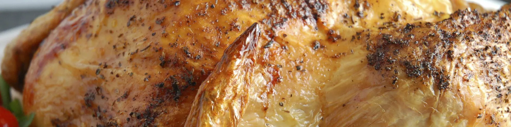

Chicken

Chicken recipe
Succulent chicken pieces marinated in a flavorful blend of herbs and spices,
grilled to perfection for a mouthwatering and juicy delight
Ingredients
- Chicken pieces
- Olive oil or cooking oil
- Salt and pepper
- Garlic powder or minced garlic
- Onion powder or finely chopped onions
- Fresh herbs
Steps
- Rinse the chicken pieces under cold water and pat them dry with paper towels.
- Season the chicken with salt, pepper, garlic powder, onion powder, and any other desired spices or seasonings.
Ensure that the chicken is evenly coated.
- Heat a frying pan or skillet over medium-high heat and add some oil to coat the bottom of the pan.
- Once the oil is hot, carefully add the seasoned chicken pieces to the pan,
skin-side down if using bone-in chicken.
- Cook the chicken for a few minutes on each side until they develop a golden brown crust.
This helps to seal in the juices and adds flavor.
- Reduce the heat to medium-low and continue cooking the chicken until it reaches an internal temperature of 165°F (74°C)
using a meat thermometer. Cooking times may vary depending on the size and thickness of the chicken pieces.
- Once the chicken is fully cooked, remove it from the pan and let it rest for a few minutes before serving.
This allows the juices to redistribute throughout the meat, resulting in a juicier chicken.
- Optionally, garnish the chicken with fresh herbs,
squeeze some lemon juice over it for added brightness, and serve it hot.